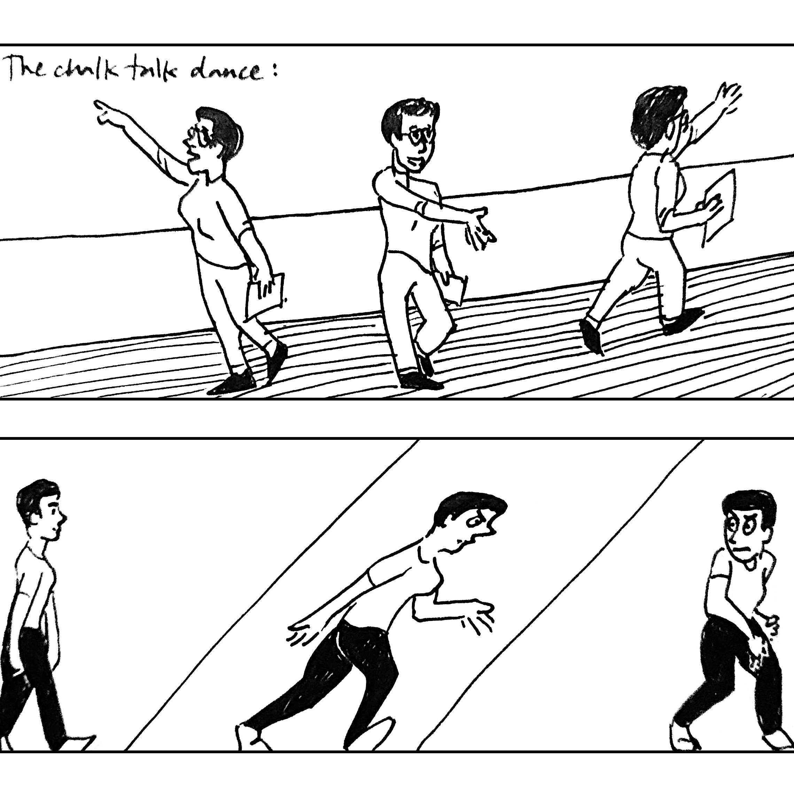

This is me, trying out a couple of (silly) walks of life:
Aside from those, I also do things like:
- study governance on the blockchain as a data scientist at the Metagovernance Project
- make some drawings (but mostly don't bother putting them online)
- keep up with my RSS feed of webcomics (here are some favorites)
Other recent walks I've walked:
- doing research and assisting in teaching courses as a graduate student at the University of Pennsylvania
- scraping together some web scraping, data analysis, and data visualization skills as a volunteer for the Philly Bail Fund (via Code for Philly) and for the ACLU of Pennsylvania
- creating a new dataset for the Bureau of Labor Statistics as a Coding It Forward fellow